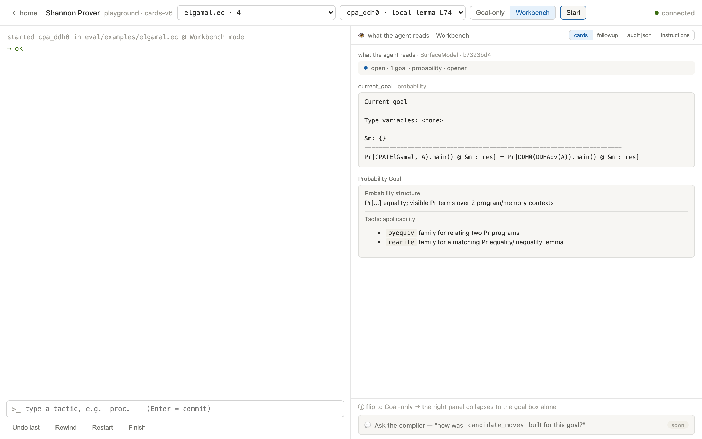
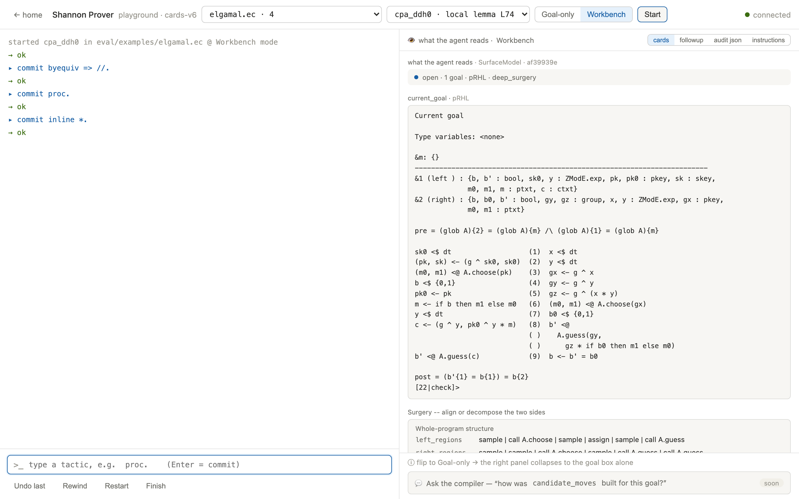
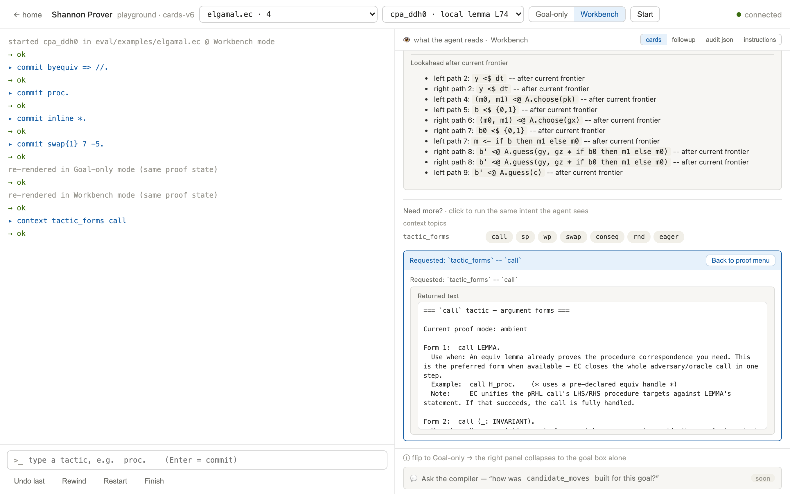
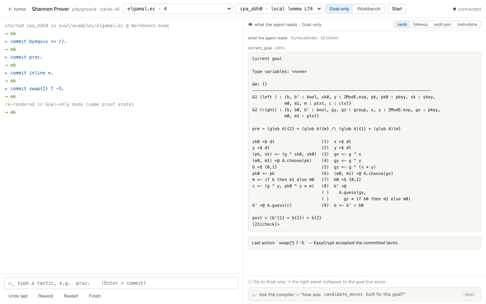
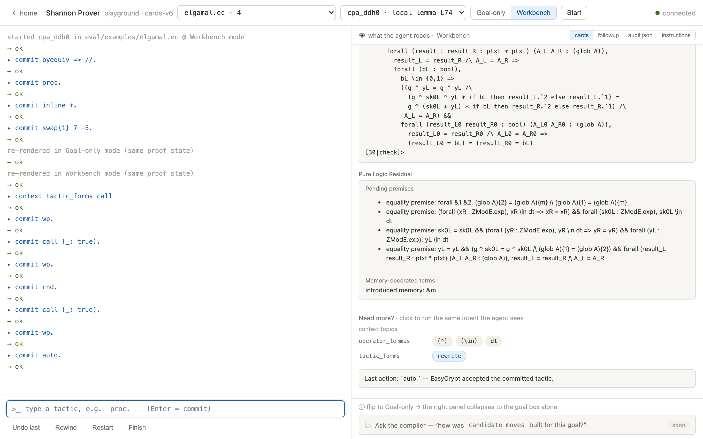
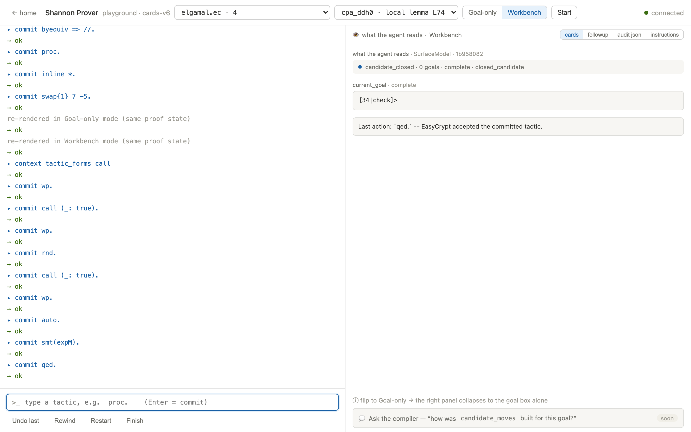

Each playground session drives a live EasyCrypt process, and the prover runs through your own Claude Code login — so it ships with the repository instead of running on this website. Getting it on your screen takes about a minute once the install steps are done:
git clone https://github.com/SkyShannonProver/shannon-prover.git
cd shannon-provereval "$(opam env --switch=easycrypt)"
uv run --with fastapi --with "uvicorn[standard]" \
uvicorn playground.server:app --host 127.0.0.1 --port 8000
# then open http://127.0.0.1:8000/playgroundIn the playground you sit where the agent sits: pick a target file and a lemma, press start, read the same panel the agent reads, and submit one intent per turn — EasyCrypt accepts or rejects each tactic live, and you can flip between Goal-only and Workbench mode mid-proof. Until then, the benchmark browser shows recorded agent runs — every turn replayable, right here in the browser.
A real session against this repo: replaying, by hand, the agent-found
proof of cpa_ddh0 — ElGamal's CPA game reduced to DDH
(eval/examples/elgamal.ec).

elgamal.ec /
cpa_ddh0, press Start. The right panel is exactly what the agent
reads: the Pr[...] goal connecting the two games, plus the compiler's
factual cards on which opener families even apply here.
byequiv ·
proc · inline * the panel lays the two games side by
side, instruction-aligned — CPA left, DDH right, adversary calls and samplings
matched up. The Surgery card summarizes both programs' structure; this is
the map the agent navigates when it decides to swap.
tactic_forms · call runs the same read-only intent the agent
submits and returns the call argument forms (call LEMMA
vs call (_: INVARIANT)). Above it, the Lookahead card shows
what sits past the current frontier on each side.

(^), (\in), dt) the remaining algebra
needs — closed here by smt(expM).
qed. — the panel flips to
candidate_closed · 0 goals · complete. The transcript is the whole
reduction: two call (_: true) adversary steps, one
swap alignment, and a machine-checked close.